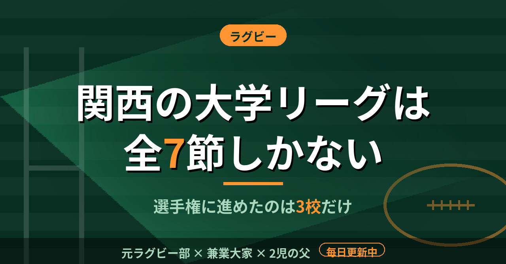

ラグビー関西の大学ラグビーは全7節。選手権に進めたのは3校だけ。4年間プレーした僕が思うこと
今年の関西大学リーグの日程表を見て、シーズンの短さに改めて驚いた。大学ラグビーは4年間あるのに、公式戦で勝負がつく期間は毎年ごく限られている。同志社でプレーした身として、数字で整理しておく。
開幕は9月13日、最終節は11月28・29日
2026年度の関西大学Aリーグは9月13日に開幕する。全7節で、最終節は11月28・29日と発表されている。9月中旬から11月末まで、約11週間である。この間に行われる公式戦が7つということだ。夏の間にどれだけ体をつくれたかが、そのまま開幕の姿になる。年間を通した練習の時間から見れば、本番はほんの一部である。
下位の側には、もうひとつ試合がある。Aリーグの7位と8位は、12月13日にBリーグ上位2チームとの入れ替え戦に回る。上位を争うチームにとっても、残留を争うチームにとっても、7節の結果がそのまま次の舞台を決める。
高校の僕は、大阪の花園予選というトーナメントで戦っていた。負ければそこで終わる。大学のリーグ戦は、1試合落としても次の試合がある。その分だけ長く戦えるが、7試合しかないという見方もできる。
全国大学選手権は14チーム、関西は3枠
全国大学選手権は、リーグの順位がそのまま入口になる。昨季の第62回大会は14チームで争われた。2025年11月22日の1回戦から、2026年1月11日の決勝までのトーナメントである。試合数は1回戦が1、2回戦が1、3回戦が4、準々決勝が4、準決勝が2、決勝が1で、全部で13試合だ。
出場枠の内訳は、関東の対抗戦Aグループが5校、関東リーグ戦1部が3校、関西Aリーグが3校、九州、北海道・東北、東海・北陸・中国・四国が各1校だった。関西から出たのは天理、京都産業、関西学院の3校である。関東の対抗戦と比べて、関西は2枠少ない。
試合の決まり方も厳しい。同点で次に進むチームを決められない場合は、トライ数、トライ後のゴール数、抽選の順で決める。決勝が同点なら両校優勝になる。関西リーグを勝ち抜いて、さらに選手権でも勝つ。そのためには、全7節のどこかで落とすことが許されにくい。
試合が少ないシーズンで、勝負は試合の前に決まる
僕は大学の4年間、同志社でラグビーをやった。体重は高校のときに60代後半で、大学で75kgまで増やした。毎年5〜10kgのペースで増えていった。
体は9月に突然できあがるわけではない。試合が少ないシーズンほど、一戦ごとの重みは増す。その一戦に体を合わせるには、開幕より前の時間をどう使ったかがすべてになる。当時はそこまで言葉にできていなかったが、日程表を見ていると、今ならそう説明できる。7節と、その先の選手権の13試合。この少なさを知ってから振り返ると、増量を続けた毎年の時間は、試合そのものと同じくらい大事だったと思う。
試合数が少ない競技では、一戦が占める割合が大きい。だからこそ、準備に使った時間が、そのまま結果に出る。
この記事は note にも掲載しています。